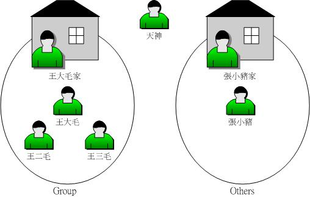

第五章、Linux 的文件权限与目录配置
Linux最优秀的地方之一就在于他的多人多任务环境。而为了让各个用户具有较保密的文件数据，因此文件的权限管理就变的很重要了。 Linux一般将文件可访问的身份分为三个类别，分别是 owner/group/others，且三种身份各有 read/write/execute 等权限。若管理不当，你的Linux主机将会变的很『不苏湖！@_@』。另外，你如果首次接触Linux的话，那么， 在Linux底下这么多的目录/文件，到底每个目录/文件代表什么意义呢？底下我们就来一一介绍呢！
5.1 用户与群组
经过第四章的洗礼之后，你应该可以在Linux的指令列模式底下输入指令了吧？ 接下来，当然是要让你好好的浏览一下Linux系统里面有哪些重要的文件啰。 不过，每个文件都有相当多的属性与权限，其中最重要的可能就是文件的拥有者的概念了。 所以，在开始文件相关信息的介绍前，鸟哥先就简单的(1)用户及(2)群组与(3)非本群组外的其他人等概念作个说明吧～ 好让你快点进入状况的哩！ ^_^
- 文件拥有者
初次接触Linux的朋友大概会觉得很怪异，怎么『Linux有这么多用户， 还分什么群组，有什么用？』。这个『用户与群组』的功能可是相当健全而好用的一个安全防护呢！怎么说呢？ 由于Linux是个多人多任务的系统，因此可能常常会有多人同时使用这部主机来进行工作的情况发生， 为了考虑每个人的隐私权以及每个人喜好的工作环境，因此，这个『文件拥有者』的角色就显的相当的重要了！
例如当你将你的e-mail情书转存成文件之后，放在你自己的家目录，你总不希望被其他人看见自己的情书吧？ 这个时候，你就把该文件设置成『只有文件拥有者，就是我，才能看与修改这个文件的内容』， 那么即使其他人知道你有这个相当『有趣』的文件，不过由于你有设置适当的权限， 所以其他人自然也就无法知道该文件的内容啰！ - 群组概念
那么群组呢？为何要设置文件还有所属的群组？其实，群组最有用的功能之一，就是当你在团队开发资源的时候啦！ 举例来说，假设有两组专题生在我的主机里面，第一个专题组别为projecta，里面的成员有 class1, class2, class3三个；第二个专题组别为projectb，里面的成员有class4, class5, class6。 这两个专题之间是有竞争性质的，但却要缴交同一份报告。每组的组员之间必须要能够互相修改对方的数据， 但是其他组的组员则不能看到本组自己的文件内容，此时该如何是好？
在Linux底下这样的限制是很简单啦！我可以经由简易的文件权限设置，就能限制非自己团队(亦即是群组啰) 的其他人不能够阅览内容啰！而且亦可以让自己的团队成员可以修改我所创建的文件！ 同时，如果我自己还有私人隐密的文档，仍然可以设置成让自己的团队成员也看不到我的文件数据。 很方便吧！
另外，如果teacher这个帐号是projecta与projectb这两个专题的老师， 他想要同时观察两者的进度，因此需要能够进入这两个群组的权限时，你可以设置teacher这个帐号， 『同时支持projecta与projectb这两个群组！』，也就是说：每个帐号都可以有多个群组的支持呢！
这样说或许你还不容易理解这个用户与群组的关系吧？没关系，我们可以使用目前『家庭』的观念来进行解说喔！ 假设有一家人，家里只有三兄弟，分别是王大毛、王二毛与王三毛三个人， 而这个家庭是登记在王大毛的名下的！所以，『王大毛家有三个人，分别是王大毛、王二毛与王三毛』， 而且这三个人都有自己的房间，并且共同拥有一个客厅喔！
- 用户的意义：由于王家三人各自拥有自己的房间，所以，
王二毛虽然可以进入王三毛的房间，但是二毛不能翻三毛的抽屉喔！那样会被三毛K的！
因为抽屉里面可能有三毛自己私人的东西，例如情书啦，日记啦等等的，这是『私人的空间』，所以当然不能让二毛拿啰！
- 群组的概念：由于共同拥有客厅，所以王家三兄弟可以在客厅打开电视机啦、
翻阅报纸啦、坐在沙发上面发呆啦等等的！ 反正，只要是在客厅的玩意儿，三兄弟都可以使用喔！
因为大家都是一家人嘛！
- 用户的意义：由于王家三人各自拥有自己的房间，所以，
王二毛虽然可以进入王三毛的房间，但是二毛不能翻三毛的抽屉喔！那样会被三毛K的！
因为抽屉里面可能有三毛自己私人的东西，例如情书啦，日记啦等等的，这是『私人的空间』，所以当然不能让二毛拿啰！
- 其他人的概念
好了，那么今天又有个人，叫做张小猪，他是张小猪家的人，与王家没有关系啦！ 这个时候，除非王家认识张小猪，然后开门让张小猪进来王家，否则张小猪永远没有办法进入王家， 更不要说进到王三毛的房间啦！不过，如果张小猪透过关系认识了三毛，并且跟王三毛成为好朋友， 那么张小猪就可以透过三毛进入王家啦！呵呵！没错！那个张小猪就是所谓的『其他人，Others』啰！
因此，我们就可以知道啦，在Linux里面，任何一个文件都具有『User, Group及Others』三种身份的个别权限， 我们可以将上面的说明以底下的图标来解释：
图5.1.1、每个文件的拥有者、群组与 others 的示意图我们以王三毛为例，王三毛这个『文件』的拥有者为王三毛，他属于王大毛这个群组， 而张小猪相对于王三毛，则只是一个『其他人(others)』而已。
不过，这里有个特殊的人物要来介绍的，那就是『万能的天神』！这个天神具有无限的神力， 所以他可以到达任何他想要去的地方，呵呵！那个人在Linux系统中的身份代号是『 root 』啦！所以要小心喔！那个root可是『万能的天神』喔！
无论如何，『用户身份』，与该用户所支持的『群组』概念，在Linux的世界里面是相当的重要的， 他可以帮助你让你的多任务Linux环境变的更容易管理！更详细的 『身份与群组』 设置，我们将在第十三章、帐号管理再进行解说。 底下我们将针对文件系统与文件权限来进行说明。
- Linux 用户身份与群组记录的文件
在我们Linux系统当中，缺省的情况下，所有的系统上的帐号与一般身份用户，还有那个root的相关信息， 都是记录在/etc/passwd这个文件内的。至于个人的密码则是记录在/etc/shadow这个文件下。 此外，Linux所有的群组名称都纪录在/etc/group内！这三个文件可以说是Linux系统里面帐号、密码、群组信息的集中地啰！ 不要随便删除这三个文件啊！ ^_^
至于更多的与帐号群组有关的设置，还有这三个文件的格式，不要急，我们在第十三章的帐号管理时，会再跟大家详细的介绍的！这里先有概念即可。
5.2 Linux 文件权限概念
大致了解了Linux的用户与群组之后，接着下来，我们要来谈一谈，这个文件的权限要如何针对这些所谓的『用户』与『群组』来设置呢？ 这个部分是相当重要的，尤其对于初学者来说，因为文件的权限与属性是学习Linux的一个相当重要的关卡， 如果没有这部份的概念，那么你将老是听不懂别人在讲什么呢！尤其是当你在你的屏幕前面出现了『Permission deny』的时候，不要担心，『肯定是权限设置错误』啦！呵呵！好了，闲话不多聊，赶快来瞧一瞧先。
5.2.1 Linux文件属性
嗯！既然要让你了解Linux的文件属性，那么有个重要的也是常用的指令就必须要先跟你说啰！那一个？就是『 ls 』这一个察看文件的指令啰！在你以dmtsai登录系统，然后使用 su - 切换身份成为root后， 下达『 ls -al 』看看，会看到底下的几个咚咚：
[dmtsai@study ~]$ su - # 先来切换一下身份看看 Password: Last login: Tue Jun 2 19:32:31 CST 2015 on tty2 [root@study ~]# ls -al total 48 dr-xr-x---. 5 root root 4096 May 29 16:08 . dr-xr-xr-x. 17 root root 4096 May 4 17:56 .. -rw-------. 1 root root 1816 May 4 17:57 anaconda-ks.cfg -rw-------. 1 root root 927 Jun 2 11:27 .bash_history -rw-r--r--. 1 root root 18 Dec 29 2013 .bash_logout -rw-r--r--. 1 root root 176 Dec 29 2013 .bash_profile -rw-r--r--. 1 root root 176 Dec 29 2013 .bashrc drwxr-xr-x. 3 root root 17 May 6 00:14 .config <=范例说明处 drwx------. 3 root root 24 May 4 17:59 .dbus -rw-r--r--. 1 root root 1864 May 4 18:01 initial-setup-ks.cfg <=范例说明处 [ 1 ][ 2 ][ 3 ][ 4 ][ 5 ][ 6 ] [ 7 ] [ 权限 ][链接][拥有者][群组][文件容量][ 修改日期 ] [ 文件名 ] |
ls是『list』的意思，重点在显示文件的文件名与相关属性。而选项『-al』则表示列出所有的文件详细的权限与属性 (包含隐藏档，就是文件名第一个字符为『 . 』的文件)。如上所示，在你第一次以root身份登录Linux时， 如果你输入上述指令后，应该有上列的几个东西，先解释一下上面七个字段个别的意思：

- 第一栏代表这个文件的类型与权限(permission)：
这个地方最需要注意了！仔细看的话，你应该可以发现这一栏其实共有十个字符：(图5.2.1及图5.2.2内的权限并无关系)

- 第一个字符代表这个文件是『目录、文件或链接档等等』：
- 当为[ d ]则是目录，例如上表文件名为『.config』的那一行；
- 当为[ - ]则是文件，例如上表文件名为『initial-setup-ks.cfg』那一行；
- 若是[ l ]则表示为链接档(link file)；
- 若是[ b ]则表示为设备档里面的可供保存的周边设备(可随机访问设备)；
- 若是[ c ]则表示为设备档里面的串行端口设备，例如键盘、鼠标(一次性读取设备)。
- 接下来的字符中，以三个为一组，且均为『rwx』
的三个参数的组合。其中，[ r ]代表可读(read)、[ w ]代表可写(write)、[ x ]代表可运行(execute)。
要注意的是，这三个权限的位置不会改变，如果没有权限，就会出现减号[ - ]而已。
- 第一组为『文件拥有者可具备的权限』，以『initial-setup-ks.cfg』那个文件为例， 该文件的拥有者可以读写，但不可运行；
- 第二组为『加入此群组之帐号的权限』；
- 第三组为『非本人且没有加入本群组之其他帐号的权限』。
|
例题：
若有一个文件的类型与权限数据为『-rwxr-xr--』，请说明其意义为何？
答：
先将整个类型与权限数据分开查阅，并将十个字符整理成为如下所示：
[-][rwx][r-x][r--]1 为：代表这个文件名为目录或文件，本例中为文件(-)； 234为：拥有者的权限，本例中为可读、可写、可运行(rwx)； 567为：同群组用户权限，本例中为可读可运行(rx)； 890为：其他用户权限，本例中为可读(r)，就是唯读之意 同时注意到，rwx所在的位置是不会改变的，有该权限就会显示字符，没有该权限就变成减号(-)就是了。 |
另外，目录与文件的权限意义并不相同，这是因为目录与文件所记录的数据内容不相同所致。 由于目录与文件的权限意义非常的重要，所以鸟哥将他独立到5.2.3节中的目录与文件之权限意义中再来谈。
- 第二栏表示有多少文件名链接到此节点(i-node)：
每个文件都会将他的权限与属性记录到文件系统的i-node中，不过，我们使用的目录树却是使用文件名来记录， 因此每个文件名就会链接到一个i-node啰！这个属性记录的，就是有多少不同的文件名链接到相同的一个i-node号码去就是了。 关于i-node的相关数据我们会在第七章谈到文件系统时再加强介绍的。
- 第三栏表示这个文件(或目录)的『拥有者帐号』
- 第四栏表示这个文件的所属群组
在Linux系统下，你的帐号会加入于一个或多个的群组中。举刚刚我们提到的例子，class1, class2, class3均属于projecta这个群组，假设某个文件所属的群组为projecta，且该文件的权限如图5.2.2所示(-rwxrwx---)， 则class1, class2, class3三人对于该文件都具有可读、可写、可运行的权限(看群组权限)。 但如果是不属于projecta的其他帐号，对于此文件就不具有任何权限了。
- 第五栏为这个文件的容量大小，缺省单位为bytes；
- 第六栏为这个文件的建档日期或者是最近的修改日期：
这一栏的内容分别为日期(月/日)及时间。如果这个文件被修改的时间距离现在太久了，那么时间部分会仅显示年份而已。 如下所示：
[root@study ~]# ll /etc/services /root/initial-setup-ks.cfg -rw-r--r--. 1 root root 670293 Jun 7 2013 /etc/services -rw-r--r--. 1 root root 1864 May 4 18:01 /root/initial-setup-ks.cfg # 如上所示，/etc/services 为 2013 年所修改过的文件，离现在太远之故，所以只显示年份； # 至于 /root/initial-setup-ks.cfg 是今年 (2015) 所创建的，所以就显示完整的时间了。 |
如果想要显示完整的时间格式，可以利用ls的选项，亦即：『ls -l --full-time』就能够显示出完整的时间格式了！包括年、月、日、时间喔。 另外，如果你当初是以繁体中文安装你的Linux系统，那么日期字段将会以中文来显示。 可惜的是，中文并没有办法在纯文本的终端机模式中正确的显示，所以此栏会变成乱码。 那你就得要使用『export LC_ALL=en_US.utf8』来修改语系喔！
如果想要让系统缺省的语系变成英文的话，那么你可以修改系统设置档『/etc/locale.conf』，利用第四章谈到的nano来修改该文件的内容，使LANG这个变量成为上述的内容即可。
- 第七栏为这个文件的文件名
这个字段就是文件名了。比较特殊的是：如果文件名之前多一个『 . 』，则代表这个文件为『隐藏档』，例如上表中的.config那一行，该文件就是隐藏档。 你可以使用『ls』及『ls -a』这两个指令去感受一下什么是隐藏档啰！
这七个字段的意义是很重要的！务必清楚的知道各个字段代表的意义！尤其是第一个字段的九个权限， 那是整个Linux文件权限的重点之一。底下我们来做几个简单的练习，你就会比较清楚啰！
|
例题：
假设test1, test2, test3同属于testgroup这个群组，如果有下面的两个文件，请说明两个文件的拥有者与其相关的权限为何？
答：-rw-r--r-- 1 root root 238 Jun 18 17:22 test.txt -rwxr-xr-- 1 test1 testgroup 5238 Jun 19 10:25 ping_tsai
|
|
例题：
承上一题如果我的目录为底下的样式，请问testgroup这个群组的成员与其他人(others)是否可以进入本目录？
答： drwxr-xr-- 1 test1 testgroup 5238 Jun 19 10:25 groups/
|
- Linux文件权限的重要性：
与Windows系统不一样的是，在Linux系统当中，每一个文件都多加了很多的属性进来，尤其是群组的概念，这样有什么用途呢？ 其实，最大的用途是在『数据安全性』上面的。
- 系统保护的功能：
举个简单的例子，在你的系统中，关于系统服务的文件通常只有root才能读写或者是运行，例如/etc/shadow这一个帐号管理的文件，由于该文件记录了你系统中所有帐号的数据， 因此是很重要的一个设置档，当然不能让任何人读取(否则密码会被窃取啊)，只有root才能够来读取啰！所以该文件的权限就会成为[ ---------- ]啰！咦！所有人都不能使用？没关系，root基本上是不受系统的权限所限制的， 所以无论文件权限为何，缺省root都可以访问喔！ - 团队开发软件或数据共用的功能：
此外，如果你有一个软件开发团队，在你的团队中，你希望每个人都可以使用某一些目录下的文件， 而非你的团队的其他人则不予以开放呢？以上面的例子来说，testgroup的团队共有三个人，分别是test1, test2, test3，那么我就可以将团队所需的文件权限订为[ -rwxrws--- ]来提供给testgroup的工作团队使用啰！(怎么会有 s 呢？没关系，这个我们在后续章节再讲给你听！) - 未将权限设置妥当的危害：
再举个例子来说，如果你的目录权限没有作好的话，可能造成其他人都可以在你的系统上面乱搞啰！ 例如本来只有root才能做的开关机、ADSL的拨接程序、添加或删除用户等等的指令，若被你改成任何人都可以运行的话， 那么如果用户不小心给你重新开机啦！重新拨接啦！等等的！那么你的系统不就会常常莫名其妙的挂掉啰！ 而且万一你的用户的密码被其他不明人士取得的话，只要他登录你的系统就可以轻而易举的运行一些root的工作！
可怕吧！因此，在你修改你的linux文件与目录的属性之前，一定要先搞清楚， 什么数据是可变的，什么是不可变的！千万注意啰！接下来我们来处理一下文件属性与权限的变更吧！
5.2.2 如何改变文件属性与权限
我们现在知道文件权限对于一个系统的安全重要性了，也知道文件的权限对于用户与群组的相关性， 那么如何修改一个文件的属性与权限呢？又！有多少文件的权限我们可以修改呢？ 其实一个文件的属性与权限有很多！我们先介绍几个常用于群组、拥有者、各种身份的权限之修改的指令，如下所示：
- chgrp ：改变文件所属群组
- chown ：改变文件拥有者
- chmod ：改变文件的权限, SUID, SGID, SBIT等等的特性
- 改变所属群组, chgrp
改变一个文件的群组真是很简单的，直接以chgrp来改变即可，咦！这个指令就是change group的缩写嘛！这样就很好记了吧！ ^_^。不过，请记得，要被改变的群组名称必须要在/etc/group文件内存在才行，否则就会显示错误！
假设你已经是root的身份了，那么在你的家目录内有一个名为 initial-setup-ks.cfg 的文件， 如何将该文件的群组改变一下呢？假设你已经知道在/etc/group里面已经存在一个名为users的群组， 但是testing这个群组名字就不存在/etc/group当中了，此时改变群组成为users与testing分别会有什么现象发生呢？
[root@study ~]# chgrp [-R] dirname/filename ... 选项与参数： -R : 进行递归(recursive)的持续变更，亦即连同次目录下的所有文件、目录 都更新成为这个群组之意。常常用在变更某一目录内所有的文件之情况。 范例： [root@study ~]# chgrp users initial-setup-ks.cfg [root@study ~]# ls -l -rw-r--r--. 1 root users 1864 May 4 18:01 initial-setup-ks.cfg [root@study ~]# chgrp testing initial-setup-ks.cfg chgrp: invalid group: `testing' <== 发生错误消息啰～找不到这个群组名～ |
发现了吗？文件的群组被改成users了，但是要改成testing的时候， 就会发生错误～注意喔！发生错误消息还是要努力的查一查错误消息的内容才好！ 将他英文翻译成为中文，就知道问题出在哪里了。
- 改变文件拥有者, chown
如何改变一个文件的拥有者呢？很简单呀！既然改变群组是change group，那么改变拥有者就是change owner啰！BINGO！那就是chown这个指令的用途，要注意的是， 用户必须是已经存在系统中的帐号，也就是在/etc/passwd 这个文件中有纪录的用户名才能改变。
chown的用途还满多的，他还可以顺便直接修改群组的名称呢！此外，如果要连目录下的所有次目录或文件同时更改文件拥有者的话，直接加上 -R 的选项即可！我们来看看语法与范例：
[root@study ~]# chown [-R] 帐号名称 文件或目录 [root@study ~]# chown [-R] 帐号名称:群组名称 文件或目录 选项与参数： -R : 进行递归(recursive)的持续变更，亦即连同次目录下的所有文件都变更 范例：将 initial-setup-ks.cfg 的拥有者改为bin这个帐号： [root@study ~]# chown bin initial-setup-ks.cfg [root@study ~]# ls -l -rw-r--r--. 1 bin users 1864 May 4 18:01 initial-setup-ks.cfg 范例：将 initial-setup-ks.cfg 的拥有者与群组改回为root： [root@study ~]# chown root:root initial-setup-ks.cfg [root@study ~]# ls -l -rw-r--r--. 1 root root 1864 May 4 18:01 initial-setup-ks.cfg |
知道如何改变文件的群组与拥有者了，那么什么时候要使用chown或chgrp呢？或许你会觉得奇怪吧？ 是的，确实有时候需要变更文件的拥有者的，最常见的例子就是在复制文件给你之外的其他人时， 我们使用最简单的cp指令来说明好了：
[root@study ~]# cp 来源文件 目的文件
|
假设你今天要将.bashrc这个文件拷贝成为.bashrc_test文件名，且是要给bin这个人，你可以这样做：
[root@study ~]# cp .bashrc .bashrc_test [root@study ~]# ls -al .bashrc* -rw-r--r--. 1 root root 176 Dec 29 2013 .bashrc -rw-r--r--. 1 root root 176 Jun 3 00:04 .bashrc_test <==新文件的属性没变 |
由于复制行为(cp)会复制运行者的属性与权限，所以！怎么办？.bashrc_test还是属于root所拥有， 如此一来，即使你将文件拿给bin这个用户了，那他仍然无法修改的(看属性/权限就知道了吧)， 所以你就必须要将这个文件的拥有者与群组修改一下啰！知道如何修改了吧？
- 改变权限, chmod
文件权限的改变使用的是chmod这个指令，但是，权限的设置方法有两种， 分别可以使用数字或者是符号来进行权限的变更。我们就来谈一谈：
- 数字类型改变文件权限
Linux文件的基本权限就有九个，分别是owner/group/others三种身份各有自己的read/write/execute权限， 先复习一下刚刚上面提到的数据：文件的权限字符为：『-rwxrwxrwx』， 这九个权限是三个三个一组的！其中，我们可以使用数字来代表各个权限，各权限的分数对照表如下：
r:4
每种身份(owner/group/others)各自的三个权限(r/w/x)分数是需要累加的，例如当权限为： [-rwxrwx---] 分数则是：
w:2
x:1owner = rwx = 4+2+1 = 7
所以等一下我们设置权限的变更时，该文件的权限数字就是770啦！变更权限的指令chmod的语法是这样的：
group = rwx = 4+2+1 = 7
others= --- = 0+0+0 = 0
举例来说，如果要将.bashrc这个文件所有的权限都设置启用，那么就下达：[root@study ~]# chmod [-R] xyz 文件或目录 选项与参数： xyz : 就是刚刚提到的数字类型的权限属性，为 rwx 属性数值的相加。 -R : 进行递归(recursive)的持续变更，亦即连同次目录下的所有文件都会变更
那如果要将权限变成『 -rwxr-xr-- 』呢？那么权限的分数就成为 [4+2+1][4+0+1][4+0+0]=754 啰！所以你需要下达『 chmod 754 filename』。 另外，在实际的系统运作中最常发生的一个问题就是，常常我们以vim编辑一个shell的文本批次档后，他的权限通常是 -rw-rw-r-- 也就是664， 如果要将该文件变成可运行档，并且不要让其他人修改此一文件的话， 那么就需要-rwxr-xr-x这样的权限，此时就得要下达：『 chmod 755 test.sh 』的指令啰！[root@study ~]# ls -al .bashrc -rw-r--r--. 1 root root 176 Dec 29 2013 .bashrc [root@study ~]# chmod 777 .bashrc [root@study ~]# ls -al .bashrc -rwxrwxrwx. 1 root root 176 Dec 29 2013 .bashrc
另外，如果有些文件你不希望被其他人看到，那么应该将文件的权限设置为例如：『-rwxr-----』，那就下达『 chmod 740 filename 』吧！
例题： 将刚刚你的.bashrc这个文件的权限修改回-rw-r--r--的情况吧！答：-rw-r--r--的分数是644，所以指令为：
chmod 644 .bashrc
- 符号类型改变文件权限
还有一个改变权限的方法呦！从之前的介绍中我们可以发现，基本上就九个权限分别是(1)user (2)group (3)others三种身份啦！那么我们就可以借由u, g, o来代表三种身份的权限！此外， a 则代表 all 亦即全部的身份！那么读写的权限就可以写成r, w, x啰！也就是可以使用底下的方式来看：
chmod u
g
o
a+(加入)
-(除去)
=(设置)r
w
x文件或目录
来实作一下吧！假如我们要『设置』一个文件的权限成为『-rwxr-xr-x』时，基本上就是：
- user (u)：具有可读、可写、可运行的权限；
- group 与 others (g/o)：具有可读与运行的权限。
所以就是：
那么假如是『 -rwxr-xr-- 』这样的权限呢？可以使用『 chmod u=rwx,g=rx,o=r filename 』来设置。此外，如果我不知道原先的文件属性，而我只想要增加.bashrc这个文件的每个人均可写入的权限， 那么我就可以使用：[root@study ~]# chmod u=rwx,go=rx .bashrc # 注意喔！那个 u=rwx,go=rx 是连在一起的，中间并没有任何空白字符！ [root@study ~]# ls -al .bashrc -rwxr-xr-x. 1 root root 176 Dec 29 2013 .bashrc
而如果是要将权限去掉而不更动其他已存在的权限呢？例如要拿掉全部人的可运行权限，则：[root@study ~]# ls -al .bashrc -rwxr-xr-x. 1 root root 176 Dec 29 2013 .bashrc [root@study ~]# chmod a+w .bashrc [root@study ~]# ls -al .bashrc -rwxrwxrwx. 1 root root 176 Dec 29 2013 .bashrc
知道 +, -, = 的不同点了吗？对啦！ + 与 – 的状态下，只要是没有指定到的项目，则该权限『不会被变动』， 例如上面的例子中，由于仅以 – 拿掉 x 则其他两个保持当时的值不变！多多实作一下，你就会知道如何改变权限啰！ 这在某些情况底下很好用的～举例来说，你想要教一个朋友如何让一个程序可以拥有运行的权限， 但你又不知道该文件原本的权限为何，此时，利用『chmod a+x filename』 ，就可以让该程序拥有运行的权限了。是否很方便？[root@study ~]# chmod a-x .bashrc [root@study ~]# ls -al .bashrc -rw-rw-rw-. 1 root root 176 Dec 29 2013 .bashrc [root@study ~]# chmod 644 .bashrc # 测试完毕得要改回来喔！
5.2.3 目录与文件之权限意义：
现在我们知道了Linux系统内文件的三种身份(拥有者、群组与其他人)，知道每种身份都有三种权限(rwx)， 已知道能够使用chown, chgrp, chmod去修改这些权限与属性，当然，利用ls -l去观察文件也没问题。 前两小节也谈到了这些文件权限对于数据安全的重要性。那么，这些文件权限对于一般文件与目录文件有何不同呢？ 有大大的不同啊！底下就让鸟哥来说清楚，讲明白！
- 权限对文件的重要性
文件是实际含有数据的地方，包括一般文本档、数据库内容档、二进位可运行档(binary program)等等。 因此，权限对于文件来说，他的意义是这样的：
- r (read)：可读取此一文件的实际内容，如读取文本档的文本内容等；
- w (write)：可以编辑、添加或者是修改该文件的内容(但不含删除该文件)；
- x (eXecute)：该文件具有可以被系统运行的权限。
那个可读(r)代表读取文件内容是还好了解，那么可运行(x)呢？这里你就必须要小心啦！ 因为在Windows底下一个文件是否具有运行的能力是借由『 扩展名 』来判断的， 例如：.exe, .bat, .com 等等，但是在Linux底下，我们的文件是否能被运行，则是借由是否具有『x』这个权限来决定的！跟文件名是没有绝对的关系的！
至于最后一个w这个权限呢？当你对一个文件具有w权限时，你可以具有写入/编辑/添加/修改文件的内容的权限， 但并不具备有删除该文件本身的权限！对于文件的rwx来说， 主要都是针对『文件的内容』而言，与文件文件名的存在与否没有关系喔！因为文件记录的是实际的数据嘛！
- 权限对目录的重要性
文件是存放实际数据的所在，那么目录主要是保存啥玩意啊？目录主要的内容在记录文件名清单，文件名与目录有强烈的关连啦！ 所以如果是针对目录时，那个 r, w, x 对目录是什么意义呢？
- r (read contents in directory)：
表示具有读取目录结构清单的权限，所以当你具有读取(r)一个目录的权限时，表示你可以查找该目录下的文件名数据。 所以你就可以利用 ls 这个指令将该目录的内容列表显示出来！ - w (modify contents of directory)：
这个可写入的权限对目录来说，是很了不起的！ 因为他表示你具有异动该目录结构清单的权限，也就是底下这些权限：- 创建新的文件与目录；
- 删除已经存在的文件与目录(不论该文件的权限为何！)
- 将已存在的文件或目录进行更名；
- 搬移该目录内的文件、目录位置。
总之，目录的w权限就与该目录底下的文件名异动有关就对了啦！ - x (access directory)：
咦！目录的运行权限有啥用途啊？目录只是记录文件名而已，总不能拿来运行吧？没错！目录不可以被运行，目录的x代表的是用户能否进入该目录成为工作目录的用途！ 所谓的工作目录(work directory)就是你目前所在的目录啦！举例来说，当你登录Linux时， 你所在的家目录就是你当下的工作目录。而变换目录的指令是『cd』(change directory)啰！
上面的东西这么说，也太条列式～太教条了～有没有清晰一点的说明啊？好～让我们来思考一下人类社会使用的东西好了！ 现在假设『文件是一堆文档文件夹』，所以你可能可以在上面写/改一些数据。而『目录是一堆抽屉』，因此你可以将文件夹分类放置到不同的抽屉去。 因此抽屉最大的目的是拿出/放入文件夹喔！现在让我们汇整一下数据：
| 组件 | 内容 | 叠代对象 | r | w | x |
| 文件 | 详细数据data | 文档文件夹 | 读到文档内容 | 修改文档内容 | 运行文档内容 |
| 目录 | 文件名 | 可分类抽屉 | 读到文件名 | 修改文件名 | 进入该目录的权限(key) |
根据上述的分析，你可以看到，对一般文件来说，rwx 主要是针对『文件的内容』来设计权限，对目录来说，rwx则是针对『目录内的文件名列表』来设计权限。 其中最有趣的大概就属目录的 x 权限了！『文件名怎么运行』？没道理嘛！其实，这个 x 权限设计，就相当于『该目录，也就是该抽屉的 "钥匙" 』啦！ 没有钥匙你怎么能够打开抽屉呢？对吧！
大致的目录权限概念是这样，底下我们来看几个范例，让你了解一下啥是目录的权限啰！
|
例题：
有个目录的权限如下所示：
答：drwxr--r-- 3 root root 4096 Jun 25 08:35 .ssh系统有个帐号名称为vbird，这个帐号并没有支持root群组，请问vbird对这个目录有何权限？是否可切换到此目录中？
vbird对此目录仅具有r的权限，因此vbird可以查找此目录下的文件名列表。因为vbird不具有x的权限，亦即 vbird 没有这个抽屉的钥匙啦！
因此vbird并不能切换到此目录内！(相当重要的概念！)
|
上面这个例题中因为vbird具有r的权限，因为是r乍看之下好像就具有可以进入此目录的权限，其实那是错的。 能不能进入某一个目录，只与该目录的x权限有关啦！此外， 工作目录对于指令的运行是非常重要的，如果你在某目录下不具有x的权限， 那么你就无法切换到该目录下，也就无法运行该目录下的任何指令，即使你具有该目录的r或w的权限。
很多朋友在架设网站的时候都会卡在一些权限的设置上，他们开放目录数据给互联网的任何人来浏览， 却只开放r的权限，如上面的范例所示那样，那样的结果就是导致网站服务器软件无法到该目录下读取文件(最多只能看到文件名)， 最终用户总是无法正确的查阅到文件的内容(显示权限不足啊！)。要注意：要开放目录给任何人浏览时，应该至少也要给予r及x的权限，但w权限不可随便给！ 为什么w不能随便给，我们来看下一个例子：
|
例题：
假设有个帐号名称为dmtsai，他的家目录在/home/dmtsai/，dmtsai对此目录具有[rwx]的权限。
若在此目录下有个名为the_root.data的文件，该文件的权限如下：
答：-rwx------ 1 root root 4365 Sep 19 23:20 the_root.data请问dmtsai对此文件的权限为何？可否删除此文件？
如上所示，由于dmtsai对此文件来说是『others』的身份，因此这个文件他无法读、无法编辑也无法运行，
也就是说，他无法变动这个文件的内容就是了。
但是由于这个文件在他的家目录下， 他在此目录下具有rwx的完整权限，因此对于the_root.data这个『文件名』来说，他是能够『删除』的！ 结论就是，dmtsai这个用户能够删除the_root.data这个文件！ |
还是看不太懂？有听没有懂喔！没关系～我们底下就来设计一个练习， 让你实际玩玩看，应该就能够比较进入状况啦！不过，由于很多指令我们还没有教， 所以底下的指令有的先了解即可，详细的指令用法我们会在后面继续介绍的。
- 先用root的身份创建所需要的文件与目录环境
我们用root的身份在所有人都可以工作的/tmp目录中创建一个名为testing的目录， 该目录的权限为744且目录拥有者为root。另外，在testing目录下在创建一个空的文件， 文件名亦为testing。创建目录可用mkdir(make directory)，创建空文件可用touch(下一章会说明)来处理。 所以过程如下所示：
[root@study ~]# cd /tmp <==切换工作目录到/tmp [root@study tmp]# mkdir testing <==创建新目录 [root@study tmp]# chmod 744 testing <==变更权限 [root@study tmp]# touch testing/testing <==创建空的文件 [root@study tmp]# chmod 600 testing/testing <==变更权限 [root@study tmp]# ls -ald testing testing/testing drwxr--r--. 2 root root 20 Jun 3 01:00 testing -rw-------. 1 root root 0 Jun 3 01:00 testing/testing # 仔细看一下，目录的权限是 744 ，且所属群组与用户均是 root 喔！ # 那么在这样的情况底下，一般身份用户对这个目录/文件的权限为何？ |
- 一般用户的读写权限为何？观察中
在上面的例子中，虽然目录是744的权限设置，一般用户应该能有 r 的权限， 但这样的权限用户能做啥事呢？由于鸟哥的系统中含有一个帐号名为 dmtsai 的，请再开另外一个终端机，使用 dmtsai 登录来操作底下的任务！
[dmtsai@study ~]$ cd /tmp [dmtsai@study tmp]$ ls -l testing/ ls: cannot access testing/testing: Permission denied total 0 ?????????? ? ? ? ? ? testing # 虽然有告知权限不足，但因为具有 r 的权限可以查找文件名。由于权限不足(没有x)，所以会有一堆问号。 [dmtsai@study tmp]$ cd testing/ -bash: cd: testing/: Permission denied # 因为不具有 x ，所以当然没有进入的权限啦！有没有呼应前面的权限说明啊！ |
- 如果该目录属于用户本身，会有什么状况？
上面的练习我们知道了只有r确实可以让用户读取目录的文件名列表，不过详细的信息却还是读不到的， 同时也不能将该目录变成工作目录(用 cd 进入该目录之意)。那如果我们让该目录变成用户的， 那么用户在这个目录底下是否能够删除文件呢？底下的练习做看看：
# 1. 先用 root 的身份来搞定 /tmp/testing 的属性、权限设置： [root@study tmp]# chown dmtsai /tmp/testing [root@study tmp]# ls -ld /tmp/testing drwxr--r--. 2 dmtsai root 20 6月 3 01:00 /tmp/testing # dmtsai 是具有全部权限的！ # 2. 再用 dmtsai 的帐号来处理一下 /tmp/testing/testing 这个文件看看： [dmtsai@study tmp]$ cd /tmp/testing [dmtsai@study testing]$ ls -l <==确实是可以进入目录 -rw-------. 1 root root 0 Jun 3 01:00 testing <==文件不是vbird的！ [dmtsai@study testing]$ rm testing <==尝试杀掉这个文件看看！ rm: remove write-protected regular empty file `testing'? y # 竟然可以删除！这样理解了吗？！ |
透过上面这个简单的步骤，你就可以清楚的知道， x 在目录当中是与『能否进入该目录』有关， 至于那个 w 则具有相当重要的权限，因为他可以让用户删除、更新、新建文件或目录， 是个很重要的参数啊！这样可以理解了吗？！ ^_^！
- 用户操作功能与权限
刚刚讲这样如果你还是搞不懂～没关系，我们来处理个特殊的案例！假设两个文件名，分别是底下这样：
- /dir1/file1
- /dir2
假设你现在在系统使用 dmtsai 这个帐号，那么这个帐号针对 /dir1, /dir1/file1, /dir2 这三个文件名来说，分别需要『哪些最小的权限』才能达成各项任务？ 鸟哥汇整如下，如果你看得懂，恭喜你，如果你看不懂～没关系～未来再来继续学！
| 操作动作 | /dir1 | /dir1/file1 | /dir2 | 重点 |
| 读取 file1 内容 | x | r | - | 要能够进入 /dir1 才能读到里面的文档数据！ |
| 修改 file1 内容 | x | rw | - | 能够进入 /dir1 且修改 file1 才行！ |
| 运行 file1 内容 | x | rx | - | 能够进入 /dir1 且 file1 能运作才行！ |
| 删除 file1 文件 | wx | - | - | 能够进入 /dir1 具有目录修改的权限即可！ |
| 将 file1 复制到 /dir2 | x | r | wx | 要能够读 file1 且能够修改 /dir2 内的数据 |
你可能会问，上面的表格当中，很多时候 /dir1 都不必有 r 耶！为啥？我们知道 /dir1 是个目录，也是个抽屉！那个抽屉的 r 代表『这个抽屉里面有灯光』， 所以你能看到的抽屉内的所有文件夹名称 (非内容)。但你已经知道里面的文件夹放在哪个地方，那，有没有灯光有差嘛？你还是可以摸黑拿到该文件夹的！对吧！ 因此，上面很多动作中，你只要具有 x 即可！r 是非必备的！只是，没有 r 的话，使用 [tab] 时，他就无法自动帮你补齐文件名了！这样理解乎？
5.2.4 Linux文件种类与扩展名
我们在基础篇一直强调一个概念，那就是：任何设备在Linux底下都是文件， 不仅如此，连数据沟通的接口也有专属的文件在负责～所以，你会了解到，Linux的文件种类真的很多～ 除了前面提到的一般文件(-)与目录文件(d)之外，还有哪些种类的文件呢？
- 文件种类：
我们在刚刚提到使用『ls -l』观察到第一栏那十个字符中，第一个字符为文件的类型。 除了常见的一般文件(-)与目录文件(d)之外，还有哪些种类的文件类型呢？
- 正规文件(regular file )：
就是一般我们在进行访问的类型的文件，在由 ls -al 所显示出来的属性方面，第一个字符为 [ - ]，例如 [-rwxrwxrwx ]。另外，依照文件的内容，又大略可以分为：
- 纯文本档(ASCII)：这是Linux系统中最多的一种文件类型啰，
称为纯文本档是因为内容为我们人类可以直接读到的数据，例如数字、字母等等。
几乎只要我们可以用来做为设置的文件都属于这一种文件类型。
举例来说，你可以下达『 cat ~/.bashrc 』就可以看到该文件的内容。
(cat 是将一个文件内容读出来的指令)
- 二进位档(binary)：还记得我们在『
第零章、计算机概论 』里面的软件程序的运作中提过，
我们的系统其实仅认识且可以运行二进位文件(binary file)吧？没错～
你的Linux当中的可运行档(scripts, 文本型批次档不算)就是这种格式的啦～
举例来说，刚刚下达的指令cat就是一个binary file。
- 数据格式档(data)：
有些程序在运作的过程当中会读取某些特定格式的文件，那些特定格式的文件可以被称为数据档
(data file)。举例来说，我们的Linux在用户登录时，都会将登录的数据记录在
/var/log/wtmp那个文件内，该文件是一个data file，他能够透过last这个指令读出来！
但是使用cat时，会读出乱码～因为他是属于一种特殊格式的文件。瞭乎？
- 纯文本档(ASCII)：这是Linux系统中最多的一种文件类型啰，
称为纯文本档是因为内容为我们人类可以直接读到的数据，例如数字、字母等等。
几乎只要我们可以用来做为设置的文件都属于这一种文件类型。
举例来说，你可以下达『 cat ~/.bashrc 』就可以看到该文件的内容。
(cat 是将一个文件内容读出来的指令)
- 目录(directory)：
就是目录啰～第一个属性为 [ d ]，例如 [drwxrwxrwx]。 - 链接档(link)：
就是类似Windows系统底下的捷径啦！ 第一个属性为 [ l ](英文L的小写)，例如 [lrwxrwxrwx] ； - 设备与设备档(device)：
与系统周边及保存等相关的一些文件， 通常都集中在/dev这个目录之下！通常又分为两种：
- 区块(block)设备档 ：就是一些保存数据，
以提供系统随机访问的周边设备，举例来说，硬盘与软碟等就是啦！
你可以随机的在硬盘的不同区块读写，这种设备就是区块设备啰！你可以自行查一下/dev/sda看看，
会发现第一个属性为[ b ]喔！
- 字符(character)设备档：亦即是一些串行端口的周边设备， 例如键盘、鼠标等等！这些设备的特色就是『一次性读取』的，不能够截断输出。 举例来说，你不可能让鼠标『跳到』另一个画面，而是『连续性滑动』到另一个地方啊！第一个属性为 [ c ]。
- 区块(block)设备档 ：就是一些保存数据，
以提供系统随机访问的周边设备，举例来说，硬盘与软碟等就是啦！
你可以随机的在硬盘的不同区块读写，这种设备就是区块设备啰！你可以自行查一下/dev/sda看看，
会发现第一个属性为[ b ]喔！
- 数据接口档(sockets)：
既然被称为数据接口档， 想当然尔，这种类型的文件通常被用在网络上的数据承接了。我们可以启动一个程序来监听用户端的要求， 而用户端就可以透过这个socket来进行数据的沟通了。第一个属性为 [ s ]， 最常在/run或/tmp这些个目录中看到这种文件类型了。 - 数据输送档(FIFO, pipe)：
FIFO也是一种特殊的文件类型，他主要的目的在解决多个进程同时访问一个文件所造成的错误问题。 FIFO是first-in-first-out的缩写。第一个属性为[p] 。
除了设备档是我们系统中很重要的文件，最好不要随意修改之外(通常他也不会让你修改的啦！)， 另一个比较有趣的文件就是链接档。如果你常常将应用程序捉到桌面来的话，你就应该知道在 Windows底下有所谓的『捷径』。同样的，你可以将 linux下的链接档简单的视为一个文件或目录的捷径。 至于socket与FIFO文件比较难理解，因为这两个咚咚与进程(process)比较有关系， 这个等到未来你了解process之后，再回来查阅吧！此外， 你也可以透过man fifo及man socket来查阅系统上的说明！
- Linux文件扩展名：
基本上，Linux的文件是没有所谓的『扩展名』的，我们刚刚就谈过，一个Linux文件能不能被运行，与他的第一栏的十个属性有关， 与文件名根本一点关系也没有。这个观念跟Windows的情况不相同喔！在Windows底下， 能被运行的文件扩展名通常是 .com .exe .bat等等，而在Linux底下，只要你的权限当中具有x的话，例如[ -rwxr-xr-x ] 即代表这个文件具有可以被运行的能力喔！
不过，可以被运行跟可以运行成功是不一样的～举例来说，在root家目录下的 initial-setup-ks.cfg 是一个纯文本档，如果经由修改权限成为 -rwxrwxrwx 后，这个文件能够真的运行成功吗？ 当然不行～因为他的内容根本就没有可以运行的数据。所以说，这个x代表这个文件具有可运行的能力， 但是能不能运行成功，当然就得要看该文件的内容啰～
虽然如此，不过我们仍然希望可以借由扩展名来了解该文件是什么东西，所以， 通常我们还是会以适当的扩展名来表示该文件是什么种类的。底下有数种常用的扩展名：
- *.sh ： 脚本或批次档 (scripts)，因为批次档为使用shell写成的，所以扩展名就编成 .sh 啰；
- *Z, *.tar, *.tar.gz, *.zip, *.tgz： 经过打包的压缩档。这是因为压缩软件分别为 gunzip,
tar 等等的，由于不同的压缩软件，而取其相关的扩展名啰！
- *.html, *.html：网页相关文件，分别代表 HTML 语法与 PHP 语法的网页文件啰！ .html 的文件可使用网页浏览器来直接开启，至于 .html 的文件， 则可以透过 client 端的浏览器来 server 端浏览，以得到运算后的网页结果呢！
基本上，Linux系统上的文件名真的只是让你了解该文件可能的用途而已， 真正的运行与否仍然需要权限的规范才行！例如虽然有一个文件为可运行档， 如常见的/bin/ls这个显示文件属性的指令，不过，如果这个文件的权限被修改成无法运行时， 那么ls就变成不能运行啰！
上述的这种问题最常发生在文件发送的过程中。例如你在网络上下载一个可运行档，但是偏偏在你的 Linux系统中就是无法运行！呵呵！那么就是可能文件的属性被改变了！不要怀疑，从网络上发送到你的 Linux系统中，文件的属性与权限确实是会被改变的喔！
- Linux文件长度限制(注1)：
在Linux底下，使用传统的Ext2/Ext3/Ext4文件系统以及近来被 CentOS 7 当作缺省文件系统的 xfs 而言，针对文件的文件名长度限制为：
- 单一文件或目录的最大容许文件名为 255bytes，以一个 ASCII 英文占用一个 bytes 来说，则大约可达 255 个字符长度。若是以每个中文本占用 2bytes 来说， 最大文件名就是大约在 128 个中文本之谱！
是相当长的文件名喔！我们希望Linux的文件名称可以一看就知道该文件在干嘛的， 所以文件名通常是很长很长！而用惯了Windows的人可能会受不了，因为文件名称通常真的都很长， 对于用惯Windows而导致打字速度不快的朋友来说，嗯！真的是很困扰.....不过，只得劝你好好的加强打字的训练啰！
- Linux文件名称的限制：
由于Linux在文本接口下的一些指令操作关系，一般来说，你在设置Linux底下的文件名称时， 最好可以避免一些特殊字符比较好！例如底下这些：
* ? > < ; & ! [ ] | \ ' " ` ( ) { }
因为这些符号在文本接口下，是有特殊意义的！另外，文件名称的开头为小数点『.』时， 代表这个文件为『隐藏档』喔！同时，由于指令下达当中，常常会使用到 -option 之类的选项， 所以你最好也避免将文件文件名的开头以 - 或 + 来命名啊！
5.3 Linux目录配置
在了解了每个文件的相关种类与属性，以及了解了如何更改文件属性/权限的相关信息后，再来要了解的就是， 为什么每套Linux distributions他们的设置档啊、运行档啊、每个目录内放置的咚咚啊，其实都差不多？ 原来是有一套标准依据的哩！我们底下就来瞧一瞧。
5.3.1 Linux目录配置的依据--FHS
因为利用Linux来开发产品或distributions的社区/公司与个人实在太多了，如果每个人都用自己的想法来配置文件放置的目录，那么将可能造成很多管理上的困扰。 你能想像，你进入一个企业之后，所接触到的Linux目录配置方法竟然跟你以前学的完全不同吗？很难想像吧～所以，后来就有所谓的Filesystem Hierarchy Standard (FHS)标准的出炉了！
根据FHS(注2)的标准文档指出，他们的主要目的是希望让用户可以了解到已安装软件通常放置于那个目录下， 所以他们希望独立的软件开发商、操作系统制作者、以及想要维护系统的用户，都能够遵循FHS的标准。 也就是说，FHS的重点在于规范每个特定的目录下应该要放置什么样子的数据而已。 这样做好处非常多，因为Linux操作系统就能够在既有的面貌下(目录架构不变)发展出开发者想要的独特风格。
事实上，FHS是根据过去的经验一直再持续的改版的，FHS依据文件系统使用的频繁与否与是否允许用户随意更动， 而将目录定义成为四种交互作用的形态，用表格来说有点像底下这样：
| 可分享的(shareable) | 不可分享的(unshareable) | |
| 不变的(static) | /usr (软件放置处) | /etc (设置档) |
| /opt (第三方协力软件) | /boot (开机与核心档) | |
| 可变动的(variable) | /var/mail (用户邮件信箱) | /var/run (进程相关) |
| /var/spool/news (新闻群组) | /var/lock (进程相关) |
上表中的目录就是一些代表性的目录，该目录底下所放置的数据在底下会谈到，这里先略过不谈。 我们要了解的是，什么是那四个类型？
- 可分享的：可以分享给其他系统挂载使用的目录，所以包括运行档与用户的邮件等数据，
是能够分享给网络上其他主机挂载用的目录；
- 不可分享的：自己机器上面运作的设备文件或者是与进程有关的socket文件等，
由于仅与自身机器有关，所以当然就不适合分享给其他主机了。
- 不变的：有些数据是不会经常变动的，跟随着distribution而不变动。
例如函数库、文档说明档、系统管理员所管理的主机服务设置档等等；
- 可变动的：经常改变的数据，例如注册表、一般用户可自行收受的新闻群组等。
事实上，FHS针对目录树架构仅定义出三层目录底下应该放置什么数据而已，分别是底下这三个目录的定义：
- / (root, 根目录)：与开机系统有关；
- /usr (unix software resource)：与软件安装/运行有关；
- /var (variable)：与系统运作过程有关。
为什么要定义出这三层目录呢？其实是有意义的喔！每层目录底下所应该要放置的目录也都又特定的规定喔！ 由于我们尚未介绍完整的Linux系统，所以底下的介绍你可能会看不懂！没关系，先有个概念即可， 等到你将基础篇全部看完后，就重头将基础篇再看一遍！到时候你就会豁然开朗啦！^_^
- 根目录 (/) 的意义与内容：
根目录是整个系统最重要的一个目录，因为不但所有的目录都是由根目录衍生出来的，同时根目录也与开机/还原/系统修复等动作有关。 由于系统开机时需要特定的开机软件、核心文件、开机所需程序、函数库等等文件数据，若系统出现错误时，根目录也必须要包含有能够修复文件系统的程序才行。 因为根目录是这么的重要，所以在FHS的要求方面，他希望根目录不要放在非常大的分区内， 因为越大的分区你会放入越多的数据，如此一来根目录所在分区就可能会有较多发生错误的机会。
因此FHS标准建议：根目录(/)所在分区应该越小越好， 且应用程序所安装的软件最好不要与根目录放在同一个分区内，保持根目录越小越好。 如此不但性能较佳，根目录所在的文件系统也较不容易发生问题。
有鉴于上述的说明，因此FHS定义出根目录(/)底下应该要有底下这些次目录的存在才好，即使没有实体目录，FHS也希望至少有链接档存在才好：
| 目录 | 应放置文件内容 |
| 第一部份：FHS 要求必须要存在的目录 | |
| /bin | 系统有很多放置运行档的目录，但/bin比较特殊。因为/bin放置的是在单人维护模式下还能够被操作的指令。 在/bin底下的指令可以被root与一般帐号所使用，主要有：cat, chmod, chown, date, mv, mkdir, cp, bash等等常用的指令。 |
| /boot | 这个目录主要在放置开机会使用到的文件，包括Linux核心文件以及开机菜单与开机所需设置档等等。 Linux kernel常用的文件名为：vmlinuz，如果使用的是grub2这个开机管理程序， 则还会存在/boot/grub2/这个目录喔！ |
| /dev | 在Linux系统上，任何设备与周边设备都是以文件的型态存在于这个目录当中的。 你只要透过访问这个目录底下的某个文件，就等于访问某个设备啰～ 比要重要的文件有/dev/null, /dev/zero, /dev/tty, /dev/loop*, /dev/sd*等等 |
| /etc |
系统主要的设置档几乎都放置在这个目录内，例如人员的帐号密码档、
各种服务的启始档等等。一般来说，这个目录下的各文件属性是可以让一般用户查阅的，
但是只有root有权力修改。FHS建议不要放置可运行档(binary)在这个目录中喔。比较重要的文件有：
/etc/modprobe.d/, /etc/passwd, /etc/fstab, /etc/issue 等等。另外 FHS 还规范几个重要的目录最好要存在 /etc/ 目录下喔：
|
| /lib |
系统的函数库非常的多，而/lib放置的则是在开机时会用到的函数库，
以及在/bin或/sbin底下的指令会调用的函数库而已。
什么是函数库呢？你可以将他想成是『插件』，某些指令必须要有这些『插件』才能够顺利完成程序的运行之意。
另外 FHS 还要求底下的目录必须要存在：
|
| /media | media是『媒体』的英文，顾名思义，这个/media底下放置的就是可移除的设备啦！ 包括软碟、光盘、DVD等等设备都暂时挂载于此。常见的文件名有：/media/floppy, /media/cdrom等等。 |
| /mnt | 如果你想要暂时挂载某些额外的设备，一般建议你可以放置到这个目录中。 在古早时候，这个目录的用途与/media相同啦！只是有了/media之后，这个目录就用来暂时挂载用了。 |
| /opt | 这个是给第三方协力软件放置的目录。什么是第三方协力软件啊？ 举例来说，KDE这个桌面管理系统是一个独立的计划，不过他可以安装到Linux系统中，因此KDE的软件就建议放置到此目录下了。 另外，如果你想要自行安装额外的软件(非原本的distribution提供的)，那么也能够将你的软件安装到这里来。 不过，以前的Linux系统中，我们还是习惯放置在/usr/local目录下呢！ |
| /run | 早期的 FHS 规定系统开机后所产生的各项信息应该要放置到 /var/run 目录下，新版的 FHS 则规范到 /run 底下。 由于 /run 可以使用内存来仿真，因此性能上会好很多！ |
| /sbin | Linux有非常多指令是用来设置系统环境的，这些指令只有root才能够利用来『设置』系统，其他用户最多只能用来『查找』而已。 放在/sbin底下的为开机过程中所需要的，里面包括了开机、修复、还原系统所需要的指令。 至于某些服务器软件程序，一般则放置到/usr/sbin/当中。至于本机自行安装的软件所产生的系统运行档(system binary)， 则放置到/usr/local/sbin/当中了。常见的指令包括：fdisk, fsck, ifconfig, mkfs等等。 |
| /srv | srv可以视为『service』的缩写，是一些网络服务启动之后，这些服务所需要取用的数据目录。 常见的服务例如WWW, FTP等等。举例来说，WWW服务器需要的网页数据就可以放置在/srv/www/里面。 不过，系统的服务数据如果尚未要提供给互联网任何人浏览的话，缺省还是建议放置到 /var/lib 底下即可。 |
| /tmp | 这是让一般用户或者是正在运行的进程暂时放置文件的地方。 这个目录是任何人都能够访问的，所以你需要定期的清理一下。当然，重要数据不可放置在此目录啊！ 因为FHS甚至建议在开机时，应该要将/tmp下的数据都删除唷！ |
| /usr | 第二层 FHS 设置，后续介绍 |
| /var | 第二曾 FHS 设置，主要为放置变动性的数据，后续介绍 |
| 第二部份：FHS 建议可以存在的目录 | |
| /home |
这是系统缺省的用户家目录(home directory)。在你添加一个一般用户帐号时，
缺省的用户家目录都会规范到这里来。比较重要的是，家目录有两种代号喔：
|
| /lib<qual> | 用来存放与 /lib 不同的格式的二进位函数库，例如支持 64 比特的 /lib64 函数库等 |
| /root | 系统管理员(root)的家目录。之所以放在这里，是因为如果进入单人维护模式而仅挂载根目录时， 该目录就能够拥有root的家目录，所以我们会希望root的家目录与根目录放置在同一个分区中。 |
事实上FHS针对根目录所定义的标准就仅有上面的咚咚，不过我们的Linux底下还有许多目录你也需要了解一下的。 底下是几个在Linux当中也是非常重要的目录喔：
| 目录 | 应放置文件内容 |
| /lost+found | 这个目录是使用标准的ext2/ext3/ext4文件系统格式才会产生的一个目录，目的在于当文件系统发生错误时， 将一些遗失的片段放置到这个目录下。不过如果使用的是 xfs 文件系统的话，就不会存在这个目录了！ |
| /proc | 这个目录本身是一个『虚拟文件系统(virtual filesystem)』喔！他放置的数据都是在内存当中， 例如系统核心、行程信息(process)、周边设备的状态及网络状态等等。因为这个目录下的数据都是在内存当中， 所以本身不占任何硬盘空间啊！比较重要的文件例如：/proc/cpuinfo, /proc/dma, /proc/interrupts, /proc/ioports, /proc/net/* 等等。 |
| /sys | 这个目录其实跟/proc非常类似，也是一个虚拟的文件系统，主要也是记录核心与系统硬件信息较相关的信息。 包括目前已加载的核心模块与核心侦测到的硬件设备信息等等。这个目录同样不占硬盘容量喔！ |
早期 Linux 在设计的时候，若发生问题时，救援模式通常仅挂载根目录而已，因此有五个重要的目录被要求一定要与根目录放置在一起， 那就是 /etc, /bin, /dev, /lib, /sbin 这五个重要目录。现在许多的 Linux distributions 由于已经将许多非必要的文件移出 /usr 之外了， 所以 /usr 也是越来越精简，同时因为 /usr 被建议为『即使挂载成为唯读，系统还是可以正常运作』的模样，所以救援模式也能同时挂载 /usr 喔！ 例如我们的这个 CentOS 7.x 版本在救援模式的情况下就是这样。因此那个五大目录的限制已经被打破了呦！例如 CentOS 7.x 就已经将 /sbin, /bin, /lib 通通移动到 /usr 底下了哩！
好了，谈完了根目录，接下来我们就来谈谈/usr以及/var啰！先看/usr里面有些什么东西：
- /usr 的意义与内容：
依据FHS的基本定义，/usr里面放置的数据属于可分享的与不可变动的(shareable, static)， 如果你知道如何透过网络进行分区的挂载(例如在服务器篇会谈到的NFS服务器)，那么/usr确实可以分享给局域网路内的其他主机来使用喔！
很多读者都会误会/usr为user的缩写，其实usr是Unix Software Resource的缩写， 也就是『Unix操作系统软件资源』所放置的目录，而不是用户的数据啦！这点要注意。 FHS建议所有软件开发者，应该将他们的数据合理的分别放置到这个目录下的次目录，而不要自行创建该软件自己独立的目录。
因为是所有系统缺省的软件(distribution发布者提供的软件)都会放置到/usr底下，因此这个目录有点类似Windows 系统的『C:\Windows\ (当中的一部份) + C:\Program files\』这两个目录的综合体，系统刚安装完毕时，这个目录会占用最多的硬盘容量。一般来说，/usr的次目录建议有底下这些：
| 目录 | 应放置文件内容 |
| 第一部份：FHS 要求必须要存在的目录 | |
| /usr/bin/ | 所有一般用户能够使用的指令都放在这里！目前新的 CentOS 7 已经将全部的用户指令放置于此，而使用链接档的方式将 /bin 链接至此！ 也就是说， /usr/bin 与 /bin 是一模一样了！另外，FHS 要求在此目录下不应该有子目录！ |
| /usr/lib/ | 基本上，与 /lib 功能相同，所以 /lib 就是链接到此目录中的！ |
| /usr/local/ | 系统管理员在本机自行安装自己下载的软件(非distribution缺省提供者)，建议安装到此目录， 这样会比较便于管理。举例来说，你的distribution提供的软件较旧，你想安装较新的软件但又不想移除旧版， 此时你可以将新版软件安装于/usr/local/目录下，可与原先的旧版软件有分别啦！ 你可以自行到/usr/local去看看，该目录下也是具有bin, etc, include, lib...的次目录喔！ |
| /usr/sbin/ | 非系统正常运作所需要的系统指令。最常见的就是某些网络服务器软件的服务指令(daemon)啰！不过基本功能与 /sbin 也差不多， 因此目前 /sbin 就是链接到此目录中的。 |
| /usr/share/ |
主要放置唯读架构的数据文件，当然也包括共享文档。在这个目录下放置的数据几乎是不分硬件架构均可读取的数据，
因为几乎都是文本文件嘛！在此目录下常见的还有这些次目录：
|
| 第二部份：FHS 建议可以存在的目录 | |
| /usr/games/ | 与游戏比较相关的数据放置处 |
| /usr/include/ | c/c++等编程语言的档头(header)与包含档(include)放置处，当我们以tarball方式 (*.tar.gz 的方式安装软件)安装某些数据时，会使用到里头的许多包含档喔！ |
| /usr/libexec/ | 某些不被一般用户惯用的运行档或脚本(script)等等，都会放置在此目录中。例如大部分的 X 窗口底下的操作指令， 很多都是放在此目录下的。 |
| /usr/lib<qual>/ | 与 /lib<qual>/功能相同，因此目前 /lib<qual> 就是链接到此目录中 |
| /usr/src/ | 一般原代码建议放置到这里，src有source的意思。至于核心原代码则建议放置到/usr/src/linux/目录下。 |
- /var 的意义与内容：
如果/usr是安装时会占用较大硬盘容量的目录，那么/var就是在系统运作后才会渐渐占用硬盘容量的目录。 因为/var目录主要针对常态性变动的文件，包括缓存(cache)、注册表(log file)以及某些软件运作所产生的文件， 包括进程文件(lock file, run file)，或者例如MySQL数据库的文件等等。常见的次目录有：
| 目录 | 应放置文件内容 |
| 第一部份：FHS 要求必须要存在的目录 | |
| /var/cache/ | 应用程序本身运作过程中会产生的一些暂存盘； |
| /var/lib/ | 程序本身运行的过程中，需要使用到的数据文件放置的目录。在此目录下各自的软件应该要有各自的目录。 举例来说，MySQL的数据库放置到/var/lib/mysql/而rpm的数据库则放到/var/lib/rpm去！ |
| /var/lock/ | 某些设备或者是文件资源一次只能被一个应用程序所使用，如果同时有两个程序使用该设备时， 就可能产生一些错误的状况，因此就得要将该设备上锁(lock)，以确保该设备只会给单一软件所使用。 举例来说，刻录机正在刻录一块光盘，你想一下，会不会有两个人同时在使用一个刻录机烧片？ 如果两个人同时刻录，那片子写入的是谁的数据？所以当第一个人在刻录时该刻录机就会被上锁， 第二个人就得要该设备被解除锁定(就是前一个人用完了)才能够继续使用啰。目前此目录也已经挪到 /run/lock 中！ |
| /var/log/ | 重要到不行！这是注册表放置的目录！里面比较重要的文件如/var/log/messages, /var/log/wtmp(记录登录者的信息)等。 |
| /var/mail/ | 放置个人电子邮件信箱的目录，不过这个目录也被放置到/var/spool/mail/目录中！ 通常这两个目录是互为链接档啦！ |
| /var/run/ | 某些程序或者是服务启动后，会将他们的PID放置在这个目录下喔！至于PID的意义我们会在后续章节提到的。 与 /run 相同，这个目录链接到 /run 去了！ |
| /var/spool/ | 这个目录通常放置一些队列数据，所谓的『队列』就是排队等待其他程序使用的数据啦！ 这些数据被使用后通常都会被删除。举例来说，系统收到新信会放置到/var/spool/mail/中， 但用户收下该信件后该封信原则上就会被删除。信件如果暂时寄不出去会被放到/var/spool/mqueue/中， 等到被送出后就被删除。如果是工作调度数据(crontab)，就会被放置到/var/spool/cron/目录中！ |
建议在你读完整个基础篇之后，可以挑战FHS官方英文文档(参考本章参考数据)，相信会让你对于Linux操作系统的目录有更深入的了解喔！
- 针对FHS，各家distributions的异同，与 CentOS7 的变化
由于FHS仅是定义出最上层(/)及次层(/usr, /var)的目录内容应该要放置的文件或目录数据， 因此，在其他次目录层级内，就可以随开发者自行来配置了。举例来说，CentOS的网络设置数据放在 /etc/sysconfig/network-scripts/ 目录下，但是SuSE则是将网络放置在 /etc/sysconfig/network/ 目录下，目录名称可是不同的呢！不过只要记住大致的FHS标准，差异性其实有限啦！
此外，CentOS 7 在目录的编排上与过去的版本不同喔！本节稍早之前已经有介绍过，这里做个汇整。 比较大的差异在于将许多原本应该要在根目录 (/) 里面的目录，将他内部数据全部挪到 /usr 里面去，然后进行链接设置！包括底下这些：
- /bin --> /usr/bin
- /sbin --> /usr/sbin
- /lib --> /usr/lib
- /lib64 --> /usr/lib64
- /var/lock --> /run/lock
- /var/run --> /run
5.3.2 目录树(directory tree)
另外，在Linux底下，所有的文件与目录都是由根目录开始的！那是所有目录与文件的源头～ 然后再一个一个的分支下来，有点像是树枝状啊～因此，我们也称这种目录配置方式为：『目录树(directory tree)』 这个目录树有什么特性呢？他主要的特性有：
- 目录树的启始点为根目录 (/, root)；
- 每一个目录不止能使用本地端的 partition 的文件系统，也可以使用网络上的 filesystem 。举例来说， 可以利用 Network File System (NFS) 服务器挂载某特定目录等。
- 每一个文件在此目录树中的文件名(包含完整路径)都是独一无二的。
好，谈完了FHS的标准之后，实际来看看CentOS在根目录底下会有什么样子的数据吧！我们可以下达以下的指令来查找：
[dmtsai@study ~]$ ls -l /
lrwxrwxrwx. 1 root root 7 May 4 17:51 bin -> usr/bin
dr-xr-xr-x. 4 root root 4096 May 4 17:59 boot
drwxr-xr-x. 20 root root 3260 Jun 2 19:27 dev
drwxr-xr-x. 131 root root 8192 Jun 2 23:51 etc
drwxr-xr-x. 3 root root 19 May 4 17:56 home
lrwxrwxrwx. 1 root root 7 May 4 17:51 lib -> usr/lib
lrwxrwxrwx. 1 root root 9 May 4 17:51 lib64 -> usr/lib64
drwxr-xr-x. 2 root root 6 Jun 10 2014 media
drwxr-xr-x. 2 root root 6 Jun 10 2014 mnt
drwxr-xr-x. 3 root root 15 May 4 17:54 opt
dr-xr-xr-x. 154 root root 0 Jun 2 11:27 proc
dr-xr-x---. 5 root root 4096 Jun 3 00:04 root
drwxr-xr-x. 33 root root 960 Jun 2 19:27 run
lrwxrwxrwx. 1 root root 8 May 4 17:51 sbin -> usr/sbin
drwxr-xr-x. 2 root root 6 Jun 10 2014 srv
dr-xr-xr-x. 13 root root 0 Jun 2 19:27 sys
drwxrwxrwt. 12 root root 4096 Jun 3 19:48 tmp
drwxr-xr-x. 13 root root 4096 May 4 17:51 usr
drwxr-xr-x. 22 root root 4096 Jun 2 19:27 var
|
上述目录相关的介绍都在上一个小节，要记得回去查看看。如果我们将整个目录树以图标的方法来显示，并且将较为重要的文件数据列出来的话，那么目录树架构有点像这样：

鸟哥只有就各目录进行简单的解释，看看就好，详细的解释请回到刚刚说明的表格中去查阅喔！ 看完了FHS标准之后，现在回到第二章里面去看看安装前Linux规划的分割情况， 对于当初为何需要分割为这样的情况，有点想法了吗？^_^。根据FHS的定义，你最好能够将/var独立出来， 这样对于系统的数据还有一些安全性的保护呢！因为至少/var死掉时，你的根目录还会活着嘛！ 还能够进入救援模式啊！
5.3.3 绝对路径与相对路径
除了需要特别注意的FHS目录配置外，在文件名部分我们也要特别注意喔！因为根据文件名写法的不同，也可将所谓的路径(path)定义为绝对路径(absolute)与相对路径(relative)。 这两种文件名/路径的写法依据是这样的：
- 绝对路径：由根目录(/)开始写起的文件名或目录名称， 例如 /home/dmtsai/.bashrc；
- 相对路径：相对于目前路径的文件名写法。 例如 ./home/dmtsai 或 ../../home/dmtsai/ 等等。反正开头不是 / 就属于相对路径的写法
而你必须要了解，相对路径是以『你当前所在路径的相对位置』来表示的。举例来说，你目前在 /home 这个目录下， 如果想要进入 /var/log 这个目录时，可以怎么写呢？
- cd /var/log (absolute)
- cd ../var/log (relative)
因为你在 /home 底下，所以要回到上一层 (../) 之后，才能继续往 /var 来移动的！ 特别注意这两个特殊的目录：
- . ：代表当前的目录，也可以使用 ./ 来表示；
- .. ：代表上一层目录，也可以 ../ 来代表。
这个 . 与 .. 目录概念是很重要的，你常常会看到 cd .. 或 ./command 之类的指令下达方式， 就是代表上一层与目前所在目录的工作状态喔！很重要的呐！
|
例题：
如何先进入/var/spool/mail/目录，再进入到/var/spool/cron/目录内？
答：
由于/var/spool/mail与/var/spool/cron是同样在/var/spool/目录中，因此最简单的指令下达方法为：
|
|
例题：
网络文档常常提到类似『./run.sh』之类的数据，这个指令的意义为何？
答：
由于指令的运行需要变量(bash章节才会提到)的支持，若你的运行档放置在本目录，并且本目录并非正规的运行档目录(/bin,
/usr/bin等为正规)，此时要运行指令就得要严格指定该运行档。『./』代表『本目录』的意思，所以『./run.sh』代表『运行本目录下，
名为run.sh的文件』啰！
|
5.3.4 CentOS 的观察
如同在第一章谈到的 Linux distribution 的差异性， 除了 FHS 之外，还有个 Linux Standard Base (LSB) 的标准是可以依循的！我们可以简单的使用 ls 来查看 FHS 规范的目录是否正确的存在于你的 Linux 系统中， 那么 Linux 核心、LSB 的标准又该如何查阅呢？基本上，LSB 团队是有列出正确支持 LSB 标准的 distribution 在如下的网页中：
不过，如果你想要知道确切的核心与 LSB 所需求的几种重要的标准的话，恐怕就得要使用诸如 uname 与 lsb_release 等指令来查阅了。 不过，这个 lsb_release 指令已经不是缺省安装的软件了，所以你得要自己安装该软件才才行。因为我们尚未讲到网络与挂载等动作， 所以底下的安装流程在你的机器上面应该是无法运行的 (除非你确实可以连上 Internet 才行！)，因为 CentOS7 在这个软件上面实在有太多的相依软件， 所以无法单纯使用 rpm 来安装！若你有公开的网络，那么底下的指令才能够顺利运作！
# 1. 透过 uname 检查 Linux 核心与操作系统的比特版本 [dmtsai@study ~]$ uname -r # 查看核心版本 3.10.0-229.el7.x86_64 [dmtsai@study ~]$ uname -m # 查看操作系统的比特版本 x86_64 # 2. 假设你的 CentOS 7 确实有网络可以使用的情况下 (要用 root 的身份) [root@study ~]# yum install redhat-lsb # yum 的用法后面章节才会介绍 .....(前面省略).... Install 1 Package (+85 Dependent packages) Upgrade ( 4 Dependent packages) Total size: 47 M Total download size: 31 M Is this ok [y/d/N]: y .....(后面省略).... Retrieving key from file:///etc/pki/rpm-gpg/RPM-GPG-KEY-CentOS-7 Importing GPG key 0xF4A80EB5: Userid : "CentOS-7 Key (CentOS 7 Official Signing Key) <security@centos.org>" Fingerprint: 6341 ab27 53d7 8a78 a7c2 7bb1 24c6 a8a7 f4a8 0eb5 Package : centos-release-7-0.1406.el7.centos.2.3.x86_64 (@anaconda) From : /etc/pki/rpm-gpg/RPM-GPG-KEY-CentOS-7 Is this ok [y/N]: y .....(后面省略).... [root@study ~]# lsb_release -a LSB Version: :core-4.1-amd64:core-4.1-noarch:cxx-4.1-amd64:cxx-4.1-noarch: desktop-4.1-amd64:desktop-4.1-noarch:languages-4.1-amd64:languages-4.1-noarch: printing-4.1-amd64:printing-4.1-noarch # LSB 的相关版本 Distributor ID: CentOS Description: CentOS Linux release 7.0.1406 (Core) Release: 7.0.1406 Codename: Core |
这个 lsb_release 的东西大家先看看就好，因为有牵涉到后面的 yum 软件安装的东西，这部份我们还没有谈到啊～而且如果你现在就直接安装， 未来我们谈网络与软件的阶段时，恐怕有些地方会跟我们的测试机环境不同～所以...先看看就好喔！ ^_^
5.4 重点回顾
- Linux的每个文件中，可分别给予拥有者、群组与其他人三种身份个别的 rwx 权限；
- 群组最有用的功能之一，就是当你在团队开发资源的时候，且每个帐号都可以有多个群组的支持；
- 利用ls -l显示的文件属性中，第一个字段是文件的权限，共有十个比特，第一个比特是文件类型， 接下来三个为一组共三组，为拥有者、群组、其他人的权限，权限有r,w,x三种；
- 如果文件名之前多一个『 . 』，则代表这个文件为『隐藏档』；
- 若需要root的权限时，可以使用 su - 这个指令来切换身份。处理完毕则使用 exit 离开 su 的指令环境。
- 更改文件的群组支持可用chgrp，修改文件的拥有者可用chown，修改文件的权限可用chmod
- chmod修改权限的方法有两种，分别是符号法与数字法，数字法中r,w,x分数为4,2,1；
- 对文件来讲，权限的性能为：
- r：可读取此一文件的实际内容，如读取文本档的文本内容等；
- w：可以编辑、添加或者是修改该文件的内容(但不含删除该文件)；
- x：该文件具有可以被系统运行的权限。
- 对目录来说，权限的性能为：
- r (read contents in directory)
- w (modify contents of directory)
- x (access directory)
- 要开放目录给任何人浏览时，应该至少也要给予r及x的权限，但w权限不可随便给；
- 能否读取到某个文件内容，跟该文件所在的目录权限也有关系 (目录至少需要有 x 的权限)。
- Linux文件名的限制为：单一文件或目录的最大容许文件名为 255 个英文本元或 128 个中文本元；
- 根据FHS的官方文档指出， 他们的主要目的是希望让用户可以了解到已安装软件通常放置于那个目录下
- FHS订定出来的四种目录特色为：shareable, unshareable, static, variable等四类；
- FHS所定义的三层主目录为：/, /var, /usr三层而已；
- 绝对路径文件名为从根目录 / 开始写起，否则都是相对路径的文件名。
5.5 本章练习
( 要看答案请将鼠标移动到『答：』底下的空白处，按下左键圈选空白处即可察看 )- 早期的 Unix 系统文件名最多允许 14 个字符，而新的 Unix 与 Linux 系统中，文件名最多可以容许几个字符？
由于使用Ext2/Ext3/Ext4/xfs 文件系统，单一文件名可达 255 字符
- 当一个一般文件权限为 -rwxrwxrwx 则表示这个文件的意义为？
任何人皆可读取、修改或编辑、可以运行，但不一定能删除。
- 我需要将一个文件的权限改为 -rwxr-xr-- 请问该如何下达指令？
chmod 754 filename 或 chmod u=rwx,g=rx,o=r filename
- 若我需要更改一个文件的拥有者与群组，该用什么指令？
chown, chgrp
- 请问底下的目录与主要放置什么数据：
/etc/, /boot, /usr/bin, /bin, /usr/sbin, /sbin, /dev, /var/log, /run- /etc/：几乎系统的所有设置文件均在此，尤其 passwd,shadow
- /boot：开机设置档，也是缺省摆放核心 vmlinuz 的地方
- /usr/bin, /bin：一般运行档摆放的地方
- /usr/sbin, /sbin：系统管理员常用指令集
- /dev：摆放所有系统设备文件的目录
- /var/log：摆放系统注册表案的地方
- /run：CentOS 7 以后才有，将经常变动的项目(每次开机都不同，如进程的PID)移动到内存暂存，所以 /run 并不占实际磁盘容量
- 若一个文件的文件名开头为『 . 』，例如 .bashrc 这个文件，代表什么？另外，如何显示出这个文件名与他的相关属性？
有『 . 』为开头的为隐藏档，需要使用 ls -a 这个 -a 的选项才能显示出隐藏文件的内容，而使用 ls -al 才能显示出属性。
5.6 参考数据与延伸阅读
- 注1：各种文件系统的文件名长度限制，维基百科： http://en.wikipedia.org/wiki/Comparison_of_file_systems
- 注2：FHS 标准的相关说明：
维基百科简易说明： http://en.wikipedia.org/wiki/Filesystem_Hierarchy_Standard
FHS 2.3 (2004 年版)的标准文档：http://www.pathname.com/fhs/pub/fhs-2.3.html
FHS 3.0 (2015 年版)的标准文档：http://refspecs.linuxfoundation.org/FHS_3.0/fhs-3.0.pdf - 关于 Journaling 日志式文章的相关说明 http://www.linuxplanet.com/linuxplanet/reports/3726/1/